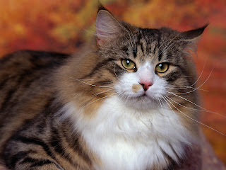
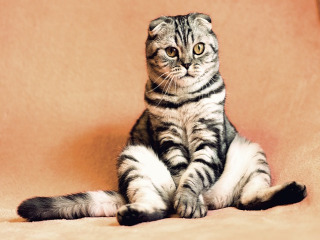
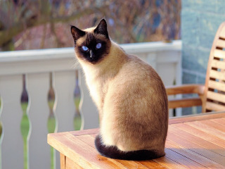
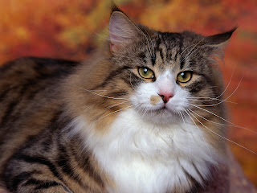
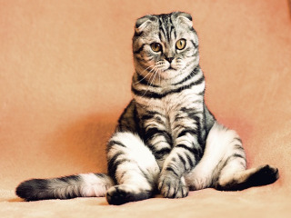
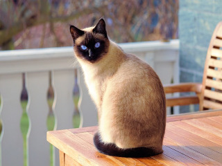
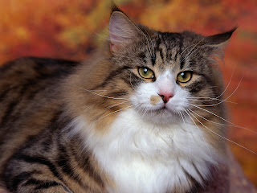
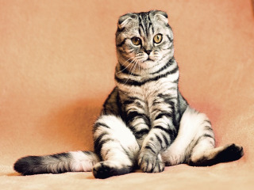
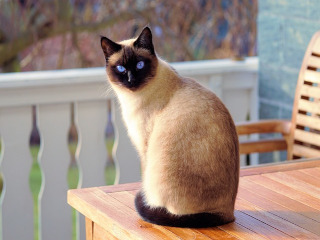

Gatos Participantes
- George C.
- Sam F.
- Doug T..
- Sally Z.
 





O evento de gatos mais divertido
O 115º Cat Fancy Event anual está sendo realizado na cidade de Nova York em 21 de dezembro. Este é o evento felino mais chique do ano, estrelado por 300 gatos diferentes. Este evento foi feito para mostrar à América como os grandes gatos realmente são. Haverá guloseimas na entrada e para os donos de gatos haverá um buffet no salão. Agradecemos por ter vindo ao nosso site do evento, e esperamos vê-lo em 21 de dezembro. Obrigado.


